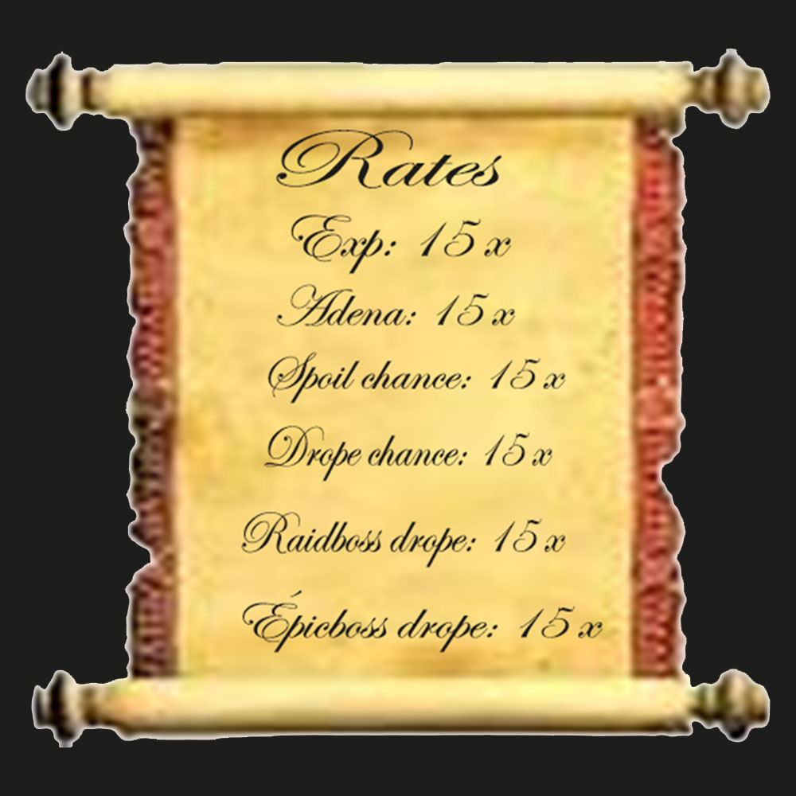

Recursos do Servidor

VOTE
Vote no servidor na página principal do site e receba suas recompensas! use o comando .menu para obter suas moedas de voto. Thorin Oakenshield NPC pode ser encontrado em qualquer vila. buff scrolls (1 hour), potions, BSOE, BRES e roupas íntimas e armaduras de capa Vá falar com Thorin Oakenshield para saber mais.